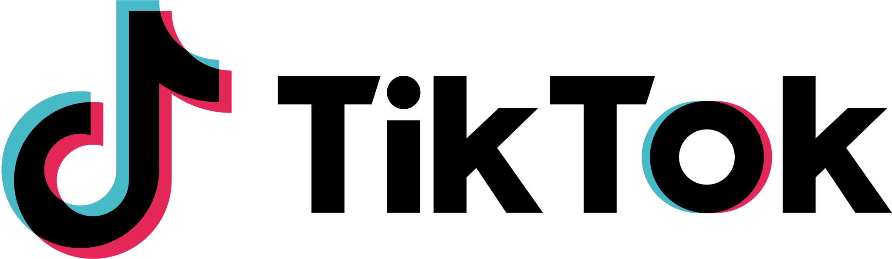

Top 5 redes sociales más utilizadas
| Red Social | Fecha de creación | Cantidad de usuarios | Link de acceso |
|---|---|---|---|
| 4 de febrero de 2004 | 3.070 millones de usuarios | https://www.facebook.com/ | |
| 14 de febrero de 2005 | 2.530 millones de usuarios | https://www.youtube.com/ | |
| 6 de octubre de 2010 | 2.000 millones de usuarios | https://www.instagram.com/ | |
| 24 de febrero de 2009 | 2.000 millones de usuarios | https://www.whatsapp.com/ | |
 |
Septiembre de 2017 | 1.590 millones de usuarios | https://www.tiktok.com/ |
Fuente: https://www.statista.com/statistics/272014/global-social-networks-ranked-by-number-of-users/